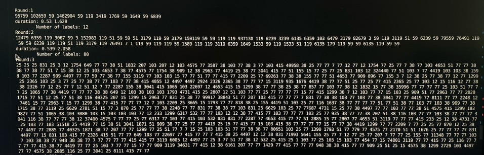

矩阵乘法的GPU与CPU并行 矩阵乘法具有天然的并行优势，充分利用并行资源可以在短时间内进行大规模矩阵乘法计算。我们这里讨论两种矩阵乘法：
数字矩阵乘法的并行
1 2 3 4 5 6 7 8 9 10 def submul1 (submat ): return submat.T @ submat def mul1 (mat, max_thread ): with mp.Pool(max_thread) as pool: ret_iter = pool.imap_unordered(submul1, np.array_split(mat, max_thread, 0 )) pool.close() pool.join() return sum (ret_iter)
1 2 3 4 5 6 7 8 9 10 11 12 13 14 15 16 17 18 19 20 21 22 23 24 25 26 27 28 29 30 31 def submul1 (a,b ): A = cp.asarray(a) B = cp.asarray(b) C = cp.matmul(A,B) C = cp.asnumpy(C) return C def mul1 (mat, max_thread ): result_mat = np.zeros_like(mat) block_num = 16 block_size = len (mat)//block_num assert (len (mat)%block_num == 0 ) for i in range (block_num): for j in range (i,block_num): t1 = dt() subres = np.zeros((block_size, block_size), dtype=np.int64) for k in range (block_num): suba = block_mat(mat,i,k,block_num) subb = block_mat(mat,j,k,block_num) subres += submul1(suba,subb.T) result_mat[i*block_size:(i+1 )*block_size, j*block_size:(j+1 )*block_size] = subres result_mat[j*block_size:(j+1 )*block_size, i*block_size:(i+1 )*block_size] = subres.T t2 = dt() return result_mat
由于python本身进行相同的运算就比c++慢10倍左右，因此在最后是使用cuda来完成的。
1 2 3 4 5 6 7 8 9 10 11 12 13 14 15 16 17 18 19 20 21 22 23 24 25 26 27 __global__ void mulkernel1 (uint64_t * A, uint64_t * B, uint64_t * C, uint64_t width) { __shared__ uint64_t Mds[BLOCK_SIZE][BLOCK_SIZE+1 ]; __shared__ uint64_t Nds[BLOCK_SIZE][BLOCK_SIZE+1 ]; uint64_t bx = blockIdx.x; uint64_t by = blockIdx.y; uint64_t tx = threadIdx.x; uint64_t ty = threadIdx.y; uint64_t Col = bx * BLOCK_SIZE + tx; uint64_t Rowwidth = (by * BLOCK_SIZE + ty)* width; uint64_t Pervalue = 0 ; for (uint64_t i = 0 ;i < width / BLOCK_SIZE;i++){ Mds[ty][tx] = A[Rowwidth + (i * BLOCK_SIZE + tx)]; Nds[ty][tx] = B[Col + (i * BLOCK_SIZE + ty) * width]; __syncthreads(); for (uint64_t k = 0 ;k < BLOCK_SIZE;k++) Pervalue += Mds[ty][k] * Nds[k][tx]; __syncthreads(); } C[Rowwidth + Col] = Pervalue; }
并行思路比较直观：
一个block算一个矩阵的小块，将大矩阵元素提取，放在shared内存中，且为了防止bank锁，第二维加1；由于共享内存大小限制，BLOCK_SIZE最好为32
两个小块矩阵相乘，每个子线程算一行乘一列
由于矩阵规模较大，这里需注意cuda运算是否发生error。否则即使内存没有分配成功，程序依旧不会报错
1 2 3 4 cudaError_t error1, error2; cudaMemcpy (cuda_a, mata.data (), sizeof (uint64_t ) * n * n, cudaMemcpyHostToDevice);error1 = cudaGetLastError (); assert (error1 == cudaSuccess);
变量矩阵乘法的并行 对于两个不同矩阵相乘，很明显想要得到快速计算的结果是困难的，这里的实现基于哈希函数的抗碰撞性和c++20的新特性，采用了一个巧妙的方法：
A. 定义了hashres用来存放result_matrix，分别放哈希值和矩阵坐标（原因：存储哈希值避免了主存爆炸的问题）
假设对于矩阵的$x$行和$y$列相乘，哈希值的计算方式：
最终得到的hash值是一个uint64_t的整数，使用的非加密型目前较快的哈希函数wyhash
由于hashres开辟了N*N的空间，可以使用omp来并行
c++20的新函数：transform_reduce，自带有一定的并行效果（实验测试约快了6倍）
1 2 3 4 5 6 7 8 9 10 11 12 13 14 15 16 17 18 19 20 vector<tuple<size_t , uint64_t , uint64_t >> hashres (N * N ); #pragma omp parallel for num_threads(USETHREAD) schedule(dynamic) for (uint64_t i = 0 ; i < N; i++){ uint64_t count = N * i; for (uint64_t j = 0 ; j < N; j++) { auto hashval = transform_reduce (mat[i].begin (), mat[i].end (), rmat[j].begin (), (uint64_t )0 , plus{}, [](auto a, auto b) { uint64_t hasha,hash; hasha = wyhash (&a,sizeof (uint64_t ),42 ,_wyp)+b; hash = wyhash (&hasha,sizeof (uint64_t ),42 ,_wyp); return hash; }); hashres[count++] = {hashval, i, j}; } }
B. 对hashres进行排序，相当于哈希值相同的元素放在一起，进行result_matrix元素的统一替换
1 2 3 4 5 6 7 8 9 10 11 12 13 14 15 16 17 18 19 20 21 22 sort (execution::par, hashres.begin (), hashres.end ());size_t now_val = get <0 >(hashres[0 ]) - 1 ;uint64_t now_count = 0 ;pair<uint64_t , uint64_t > now_ij; vector<pair<vector<pair<uint64_t , uint64_t >>,uint64_t >> checkhash; for (auto &[hastval, i, j] : hashres){ if (hastval != now_val){ vector<pair<uint64_t , uint64_t >> temp; now_val = hastval; now_count++; now_ij = make_pair (i, j); res[i][j] = now_count; temp.emplace_back (make_pair (i,j)); checkhash.emplace_back (make_pair (temp,now_count)); } else { res[i][j] = now_count; auto & lastele = checkhash.back ().first; lastele.emplace_back (make_pair (i,j)); } }
C. 碰撞check：在这里为了并行方便，将check的过程单独拿出来。由于复杂度不可避免，若有大量元素需要进行check，程序运行的时间会显著变长。一个小例子如下

如果认为哈希过程的check不可忽略，则一个明显的改进想法是：用数字代替哈希
对于数字版本的矩阵乘法，使用RTX4090可以在$<12h$的时间内计算得到250000规模的矩阵乘法的精确结果，block size为64，但是由于每个矩阵的元素都是uint64_t的数，对于主存的使用是巨大的。在实验中，进行了5轮矩阵的乘法和元素替换，约使用了1.5T主存，这是一般的台式机无法达到的。在未来，需尝试将程序改为与硬盘交互，降低对电脑主存的要求。GitHub or email- zhangmin2022@iie.ac.cn .